Tab 1
TAREA 3.1. Instalación de Moodle
FICHA TÉCNICA DE LA ACTIVIDAD ¶ |
||
|---|---|---|
| Unidad Didáctica | Unidad 3. Instalación, configuración y utilización de sistemas de gestión de aprendizaje a distancia | |
| Nombre de la Tarea | TAREA 3.1. Instalación de Moodle | |
| Resultado de Aprendizaje (RA) | ||
| Criterios de Evaluación (CE) | ||
| Fecha Publicación/Entrega | Date | Date |
MÉTODO DE ENTREGA Y FORMATO ¶ |
||
| Documento |
|
|
1. DESCRIPCIÓN GENERAL. OBJETIVOS ¶
En esta actividad el alumno deberá instalar una plataforma Moodle en el servidor Web utilizado durante el curso.
2. CONSIDERACIONES PREVIAS ¶
Partiendo de que tenemos instalado el servidor web (apache, php y mysql), vamos a descargar e instalar Moodle. Además de realizar los siguientes pasos, se tendrán que ir realizando capturas de pantalla (OBLIGATORIO que se os identifique) y respondiendo a las preguntas que se plantean. Copiar los distintos apartados, las explicaciones de este documento y los enunciados. Se entregará un documento PDF con los requisitos establecidos para este tipo de documentos.
3. EXPLICACIÓN DETALLADA (PASO A PASO) ¶
PARTE 1. Instalación de Moodle
¿Qué es un LMS o sistema de gestión de aprendizaje? (0,25)
¿Cuáles son los LMS más utilizados? (0,25)
-
DESCARGA DE MOODLE
Vaya al directorio "opt" y con git vamos a clonar lo que necesitamos:
cd /opt
sudo git clone git://git.moodle.org/moodle.git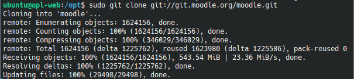
Una vez instalado, navegue hasta la carpeta donde vamos a descargar los archivos deseados.
cd moodleEnumere las versiones disponibles, si es necesario:
sudo git branch -a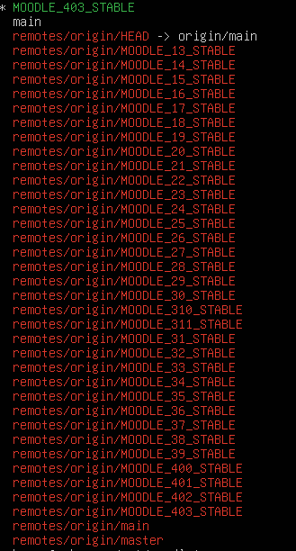
Pulsar ENTER para verlas todas y CTRL+Z para finalizar.
Después de eso, seleccionamos una rama en particular y la instalamos.
En nuestro caso será la última versión estable y con soporte ampliado.
sudo git branch --track MOODLE_405_STABLE
origin/MOODLE_405_STABLE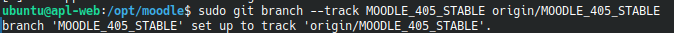
Las nuevas versiones 500 y 501 son distintas en cuanto a los requisitos y proceso de instalación.
Verifique la versión instalada de Moodle en nuestro servidor :
sudo git checkout MOODLE_405_STABLE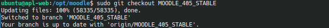
Vamos a copiar el contenido de la carpeta donde hemos descargado Moodle (en nuestro caso /opt/moodle), al directorio donde será accesible para apache. En nuestro caso, Wordpress lo instalamos en la carpeta /var/www/html. Ejecutar el siguiente comando:
sudo cp -R /opt/moodle /var/www/htmlVamos a crear una carpeta donde se almacenarán los datos de Moodle:
sudo mkdir /var/www/moodledataIMPORTANTE: esta carpeta no puede ser accesible desde la web. Se guardarán archivos de los cursos, no de configuración.
No olvides darle ciertos permisos:
sudo chown -R www-data
/var/www/moodledata
sudo chmod -R 777 /var/www/moodledata
sudo chmod ugoa=rwx /var/www/moodledata
sudo chmod -R 0755 /var/www/html/moodleExplicar los pasos que se han realizado (no hace falta indicar los comandos utilizados) (1)
¿El comando git para que sirve? Incluir una pequeña explicación. (0,25)
Indicar cual es la versión más antigua y las más reciente que se puede descargar. (0,25)
Hacer una captura del contenido de la carpeta /var/www/html/moodle. Se tiene que identificar que es vuestra instancia. Por ejemplo visualizando la IP de vuestra instancia o escribiendo vuestro nombre en el prompt del sistema.(0,5)
-
CONFIGURACIÓN DE MYSQL
Para configurar la base de datos, primero tendremos que modificar la configuración de MySQL. Con cualquier editor de texto, en nuestro caso será "nano" tendremos que editarlo y agregar 3 líneas de código al final del archivo de configuración.
Investigar dónde está el archivo de configuración de mysql (mysqld.cnf).
Hacer una captura donde se vea la inclusión de las líneas que se van a incluir tal y como se aprecia en la siguiente captura.
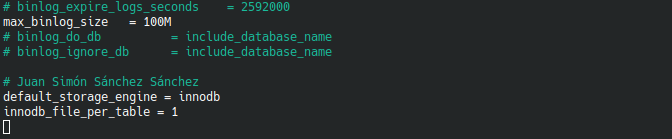
Guarde el archivo de configuración y reinicie la base de datos
sudo systemctl restart mysqlPara crear la base de datos, ejecutamos el siguiente comando nos conecta a mysql: ¶
sudo mysql -u rootActive la compatibilidad con UTF 4 de 8 bytes:
CREATE DATABASE moodle DEFAULT CHARACTER SET utf8mb4 COLLATE utf8mb4_unicode_ci;
Cree un usuario para la base de datos:
create user moodle@'localhost' IDENTIFIED BY 'P@ssw0rd';
IMPORTANTE: establecer una contraseña y anotarla, para que no se olvide.
Otorgar plenos derechos a nuestro usuario
GRANT SELECT,INSERT,UPDATE,DELETE,CREATE,CREATE TEMPORARY TABLES,DROP,INDEX,ALTER ON moodle.* TO moodle@'localhost';
FLUSH PRIVILEGES;
Explicar los pasos que se han realizado (no hace falta indicar los comandos utilizados, junto a la captura anterior. (1)
Hacer otra captura donde se vea el resultado de las siguientes sentencias de SQL: (0,5)
SHOW DATABASES;
SELECT user, host FROM mysql.user;
Ya nos podemos salir de la consola de MySQL:
quit;
Otorgar derechos de acceso a la carpeta "moodle":
sudo chmod -R 777 /var/www/html/moodleReinicie su servidor:
sudo systemctl restart apache2-
ARCHIVO DE CONFIGURACIÓN DE MOODLE:
En la carpeta, /var/www/html/moodle, hacer una copia del archivo config-dist.php con el nombre config.php.
Editar el archivo config.php para que quede de la siguiente forma:
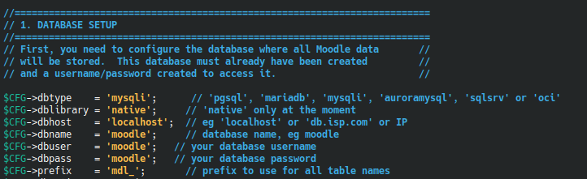
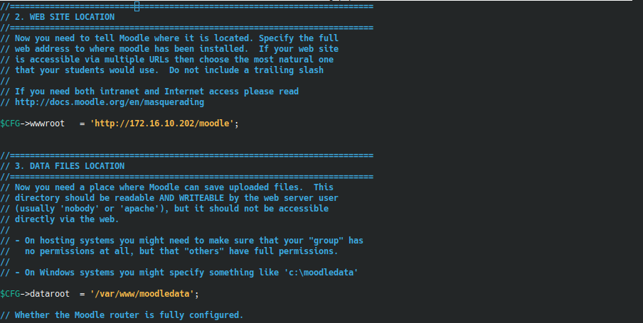
Cuidado, establecer vuestra contraseña de la base de datos y vuestro dominio (IP flotante) de forma correcta. La carpeta dataroot es /var/www/moodledata
-
INSTALACIÓN Y CONFIGURACIÓN DE MOODLE
Si accedemos a Moodle, procederemos a sus instalación
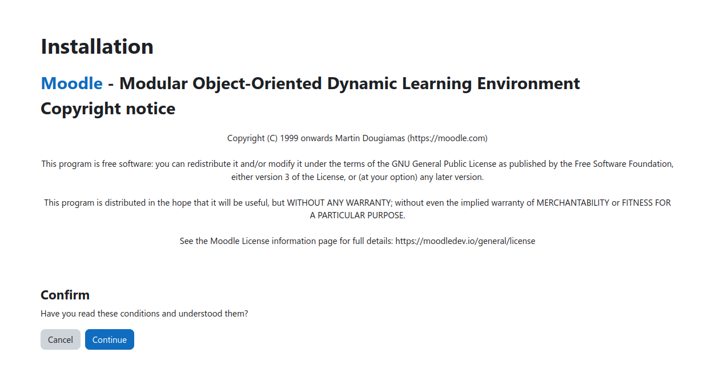
Incluir una captura como la imagen anterior para verificar que se puede entrar a vuestro Moodle con vuestra URL. (0,25)
Se realizarán capturas de cada uno de los pasos que se van a realizar a continuación. Incluir una breve explicación (1)
Son varios pasos los que tenemos que realizar: seleccionamos el idioma (Español - Internacional), confirmamos las rutas de acceso, establecemos la base de datos de moodle, usuario y contraseña (se indicó en los pasos iniciales), etc. En uno de los pasos se verifica que el sistema permite su instalación:
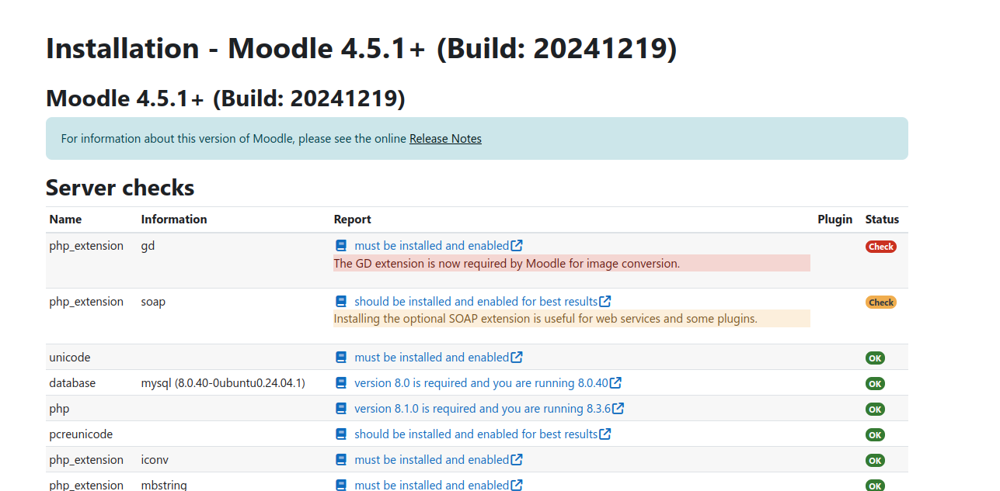
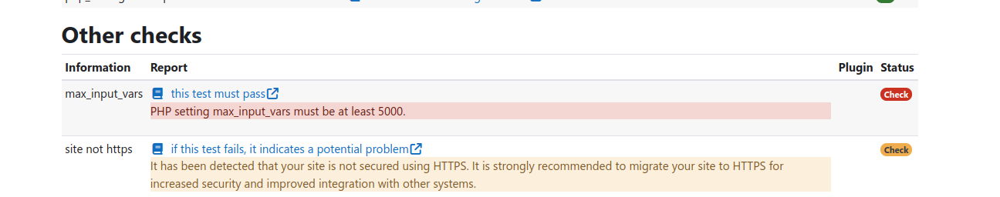
Incluir capturas como las imágenes anteriores donde se vean los errores que se han detectado (0,25)
Si nos sale algún error importante (color rojo) se ha de corregir. Seguir las indicaciones que nos proporciona Moodle para solucionarlas, pulsando en el enlace nos dará las explicaciones necesarias para su solución. Se puede volver a chequear si se cumplen los requisitos, en la parte inferior existe la opción de recargar. Serán dos errores los que se tienen que corregir y el primer check naranja. Reiniciar apache para que todos los cambios sean aplicados.
Incluir una nueva captura para verificar que se ha solucionado todos los problemas detectados. (0,25)
Si sale el siguiente error
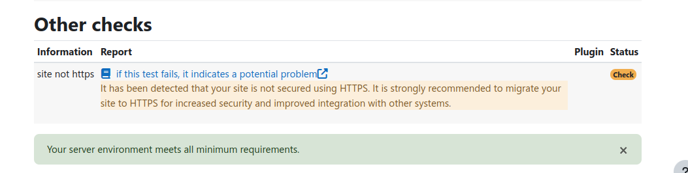
Este aviso lo podemos ignorar, ya que no tenemos configurado https para nuestro servidor web
Incluir capturas de los pasos siguientes para verificar su realización, se tiene que ver vuestra URL (0,25)
Los siguientes pasos pueden tardar un poco, ya que se creará la base de datos y luego configurar distintos elementos de la plataforma Moodle.
Finalmente podemos completar el registro de la plataforma (no lo vamos a hacer)
4. CALIFICACIÓN ¶
La práctica será evaluada según los siguientes criterios:
-
Funcionalidad (40%): Correcta implementación de las tareas/actividades solicitadas.
Memoria y Documentación (50%): [Claridad, concisión y completitud de la memoria entregada (explicaciones, capturas y comentarios)][Realización de manera clara, eficiente y adecuada]
Presentación (10%): Se siguen las indicaciones para el tipo de documento
IMPORTANTE: El retraso en la entrega, no cumplir los requisitos o la realización de forma inadecuada puede penalizar la calificación o anular la entrega
CRITERIOS DE CALIFICACIÓN (RÚBRICA) ¶
| Apartado / Criterio | Muy Bien (100%) | Notable (75%) | Bien (50%) | Mejorable (30%) | Insuficiente (0%) | Peso |
|---|---|---|---|---|---|---|
| Contenido Técnico / funcionalidad | Instalación y configuración completas y sin errores (Moodle, MySQL, permisos, etc.), demostrando la correcta implementación de la tarea. | Completo con errores menores/mínimos que no impiden el funcionamiento general de la plataforma. | Mayoría correcto, con algunos errores notables o partes que no funcionan, pero la base de la instalación es correcta. | Errores notables o faltan partes importantes de la instalación que impiden su funcionamiento. | No realizado o no cumple con los requisitos funcionales fundamentales. | 40% |
| Memoria y Documentación | Se incluyen todas las explicaciones, capturas solicitadas (identificadas claramente) y las respuestas a todas las preguntas de forma clara, concisa y completa, siguiendo la secuencia de pasos del documento. | Incluye la mayoría de las explicaciones, capturas y respuestas, siguiendo los pasos correctamente, con omisiones menores que no afectan la comprensión global de la tarea. | Pasos incompletos, faltan capturas importantes, o varias preguntas clave quedan sin responder/explicar. La documentación es insuficiente para el 40%. | Faltan partes importantes de la memoria, documentación pobre o la mayoría de preguntas/capturas/explicaciones están ausentes o son incorrectas. | No se entrega documentación, la información es inútil o no se ajusta a lo solicitado. | 50% |
| Presentación | Documento limpio, profesional y creativo. Sigue el formato (PDF) y cumple rigurosamente con todas las indicaciones de identificación. | Documento limpio, sigue el formato (PDF) y cumple las indicaciones de identificación solicitadas. | Desorganizado o sin formato adecuado (ej. no es PDF o le falta formato básico). | Desorganizado y difícil de leer. | Muy pobre o no trabajada. | 10% |